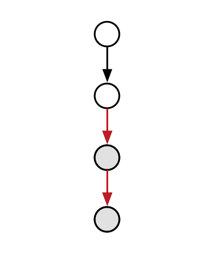
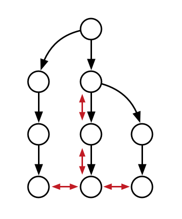
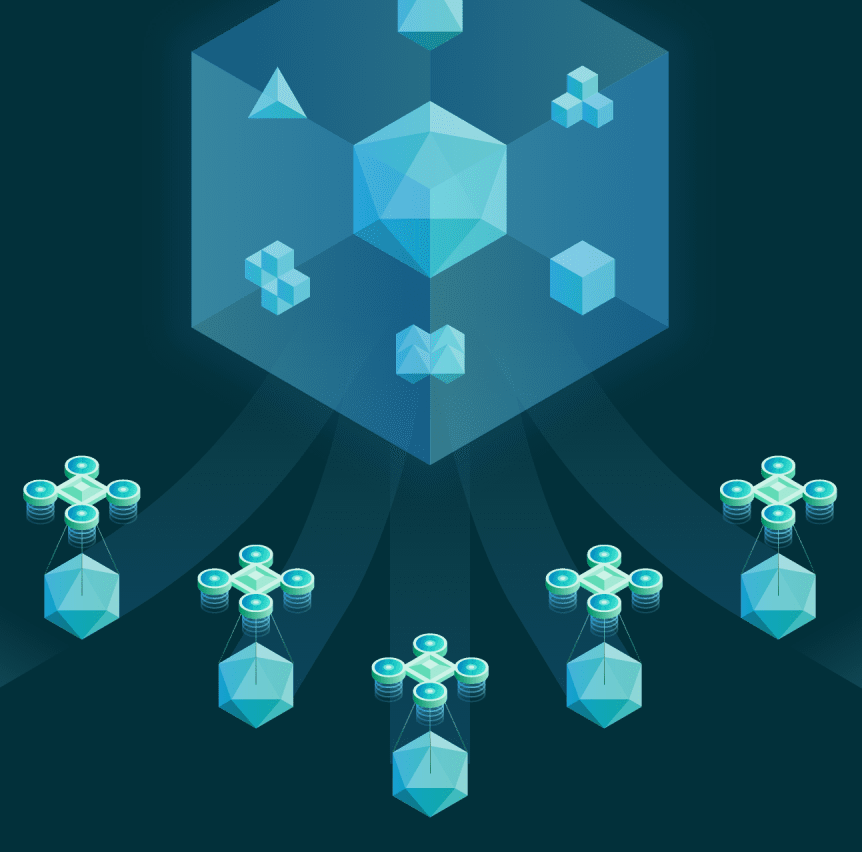
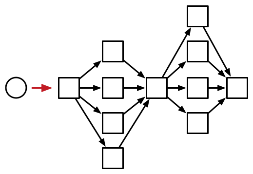

class CustomTask extends DefaultTask {
@InputDirectory
File sourceDirectory
@OutputFile
File outputFile
// ...
}Lóránt Pintér (@lptr), Gradle
:navigation:™
What is the build cache?
Support available today
Next steps
faster build → quicker feedback → better productivity
faster build → fewer CI machines
Designed for:
|  |
check task’s inputs
check task’s outputs
profit!
:compileJava UP-TO-DATE
class CustomTask extends DefaultTask {
@InputDirectory
File sourceDirectory
@OutputFile
File outputFile
// ...
}works locally
optimized for incremental changes
"best-effort"
is-a semi-permanent storage
enabled by --build-cache
is-a feature using the build cache where:
the address is the task’s inputs,
the content is the task’s outputs.
(with a few tricks…)
Useful when:
|  |
Implementations:
|  |
Reuse outputs:
|  |
no need to rebuild other people’s changes
CI pushes only
CI and developers push
33.9%
code architecture
build structure
nature of the change
what tasks are cached
slow connections
geographically diverse
one big :core module with 30%+ of the code
7.96% faster (167 builds)
Code quality checks: -25.7%
3 hours saved (42 builds)
Linux & Windows integration tests: -33.9%
62 hours saved (32 builds)
caching uses same metadata* as incremental build
more permanent, no clean to fix problems
* — that can be faulty
more warnings
enforce good practices
disable caching when unsafe
later: isolated execution
better stale file cleanup
track Java version
remove Java-Groovy compilation overlap
user guide chapter for inputs and outputs
build cache guide
non-homogenous environments
OS, locale, env. vars
tool versions installed
new concept: relocatability
where’s your $HOME?
class CustomTask extends DefaultTask {
@PathSensitive(PathSensitivity.RELATIVE)
@InputDirectory
File sourceDirectory
// ...
}@CacheableTask
class ConcatenateTask extends DefaultTask {
@PathSensitive(PathSensitivity.NONE)
@InputFiles FileCollection sourceFiles
@OutputFile File outputFile
@TaskAction
void concatenate() {
outputFile.createNewFile()
sourceFiles.each {
outputFile << it.text + '\n'
}
}
}@CacheableTask
class ConcatenateTask extends DefaultTask {
@PathSensitive(PathSensitivity.NONE)
@InputFiles FileCollection sourceFiles
@OutputFile File outputFile
@TaskAction
void concatenate() {
outputFile.createNewFile()
sourceFiles.sort().each {
outputFile << it.text + '\n'
}
}
}opt-in: tasks are marked with @CacheableTask
custom tasks support later
Java projects supported in Gradle 4.0
caching support coming in Android plugin 3.0
full Scala, Groovy and native support coming
Build Cache Guide:
Gradle Enterprise cache:
Slides:
Learn more at gradle.org
Slack: #build-cache
Moving existing builds towards full cacheability
Tomorrow 1pm in MEDITERRANEAN III
Stefan Wolf and Sterling Greene
Maximizing incrementality
Tomorrow 4.40pm in MEDITERRANEAN III
Cédric Champeau